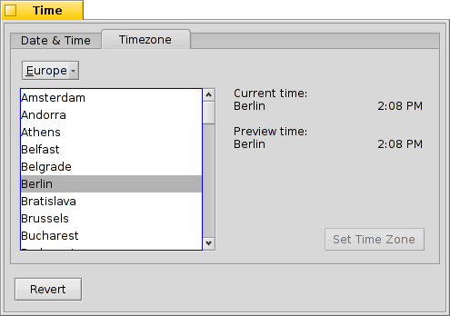

Czas
Czas
| Deskbar: | ||
| Ścieżka: | /boot/system/preferences/Time | |
| Ustawienia: | ~/config/settings/networktime settings – wszystkie ustawienia dotyczące synchronizacji czasu przez sieć ~/config/settings/RTC_time_settings – ustawienie zegara sprzętowego (lokalny lub GMT) ~/config/settings/Time settings – ustawienie strefy czasowej ~/config/settings/Time_preflet_window – pozycja okna panelu itp. |
Panel preferencji Czasu jest podzielony na cztery karty:
 Data i czas
Data i czas

Po lewej stronie możesz ustawić dzień tygodnia klikając go w kalendarzu. Miesiąc i rok zmienia się używając strzałek w górę i w dół po prawej lub klawiszy strzałek na klawiaturze.
Po prawej stronie podobnie ustawia się czas. Można też przesunąć wskazówki zegara.
Strefa czasowa

Aby zmienić strefę czasową wystarczy wybrać swój kraj z listy i wcisnąć . W przypadku krajów z kilkoma strefami czasowymi należy rozwinąć wpis na liście.
Po prawej znajduje się godzina w bieżącej strefie czasowej i podgląd godziny w strefie wybranej z listy.
Również po prawej widoczne jest ustawienie zegara sprzętowego w komputerze. Może on działać w jednym z dwóch trybów:
| wyświetla czas lokalny, co jest zalecanym ustawieniem, jeżeli na komputerze jest zainstalowany także system Windows. | ||
| wyświetla czas Greenwich (GMT), co jest ustawieniem kompatybilnym z systemem Unix. |
Czas z sieci
Ręczne ustawianie daty i czasu jest niepotrzebne, jeżeli masz połączenie z Internetem. Istnieją publiczne serwery dostarczające bardzo dokładne ustawienia.

Przyciskami / można dodać/usunąć serwery NTP z listy.
Pola wyboru niżej instruują system, aby podczas synchronizacji, nie tylko jeden wybrany, oraz aby , żeby mieć pewność że czas jest zawsze prawidłowo ustawiony.
Można jeżeli przypadkowo usunięto działające serwery NTP oraz czas ręcznie. Synchronizację można wymusić z linii komend (lub skryptu) w następujący sposób:
Time --update
Zegar

Ostatnia karta zawiera ustawienia zegara wyświetlanego w Deskbarze. Można go całkowicie wyłączyć polem wyboru na samej górze. Pozostałe opcje nie wymagają wyjaśnienia.
Na każdej karcie znajduje się przycisk , który przywraca ustawienia aktywne w momencie uruchomienia panelu preferencji.